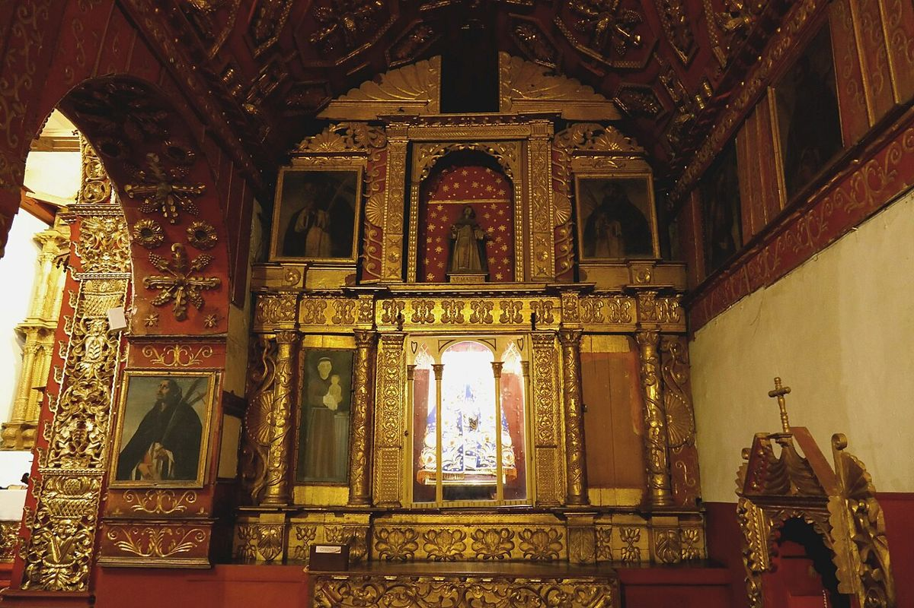
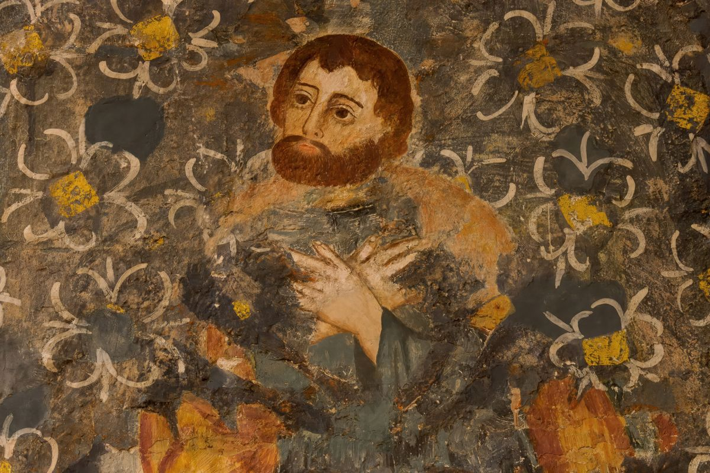

Contenido de ejemplo: estas tres publicaciones no son actividades reales de la parroquia.

Fecha de ejemplo: 14 de marzo de 2026
Recorrido guiado por el patrimonio
Ejemplo de publicación para anunciar una visita guiada por los retablos y murales del templo.

Fecha de ejemplo: 2 de abril de 2026
Charla sobre el arte neogranadino
Ejemplo de publicación para invitar a una charla sobre la talla en madera y el dorado.

Fecha de ejemplo: 20 de mayo de 2026
Jornada de puertas abiertas
Ejemplo de publicación para anunciar una jornada especial de visitas.